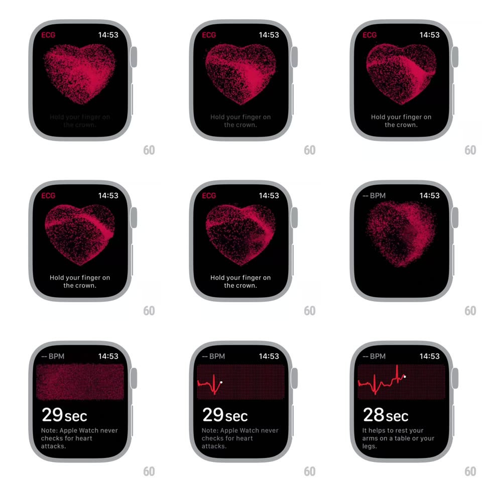

Media
Frame-by-frame

Rebuild this interaction 1:1: the Apple Watch ECG intro - a heart built from thousands of red particles shimmers and coalesces on the black watch face while "Hold your finger on the crown" appears below, then the particles scatter and regroup into the ECG grid as a live red trace begins drawing and the countdown starts.

Rebuild this interaction 1:1: the Apple Watch ECG intro - a heart built from thousands of red particles shimmers and coalesces on the black watch face while "Hold your finger on the crown" appears below, then the particles scatter and regroup into the ECG grid as a live red trace begins drawing and the countdown starts.
## Integration
Integration: stack-agnostic spec - springs given as stiffness/damping, timed motions as duration + curve; map every value to your framework and animation library of choice.
## Scene
Apple Watch ECG app. Phase one: "ECG" top-left, time top-right, a particle heart center, instruction text below. Phase two: dotted grid background, live ECG trace, "N sec" countdown and a guidance note.
## Motion spec
Pattern: particle morph from heart to instrument.
- Particle heart: ~3-5k red/pink particles form the heart volume, each with a slight noise drift (~10px wander, 2-3s period); the whole heart breathes (scale 0.97 -> 1.03, ~1s cycle, in time with a resting beat).
- Instruction "Hold your finger on the crown." fades in below (300ms) once the heart is formed.
- Transition: particles scatter outward (~400ms, ease-in) then converge onto the grid plane, dissolving into the dotted ECG field (~500ms).
- Measurement: a red trace draws left to right in real time with a bright leading dot; the countdown ("29 sec", "28 sec"...) ticks below; the note line sits under it.
## Calibration
- Particles are tiny squares/points with varied opacity - the heart reads as density, not a solid shape.
- The morph is one continuous particle system: same particles, new formation - never crossfade two images.
## Reduced motion
Heart fades to the grid view (300ms); trace still draws live.
## Don't miss
- The heart breathes at resting-heart tempo, not an arbitrary loop.
- The trace's leading dot is brighter than the drawn line - it is the "now" marker.